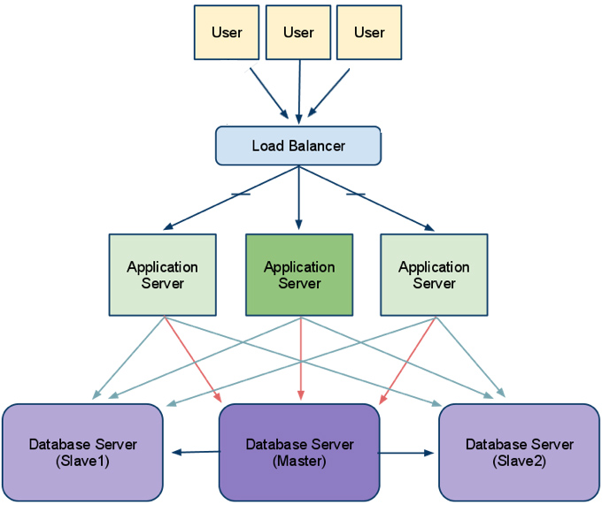
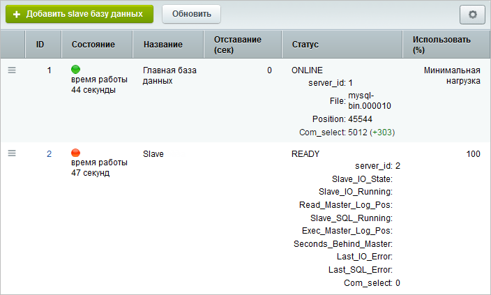
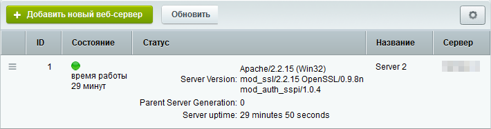
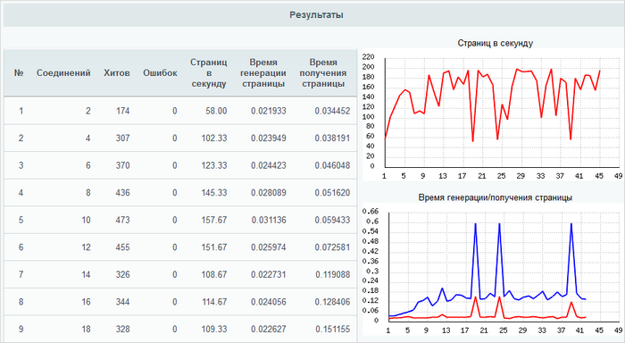

ОТКАЗОУСТОЙЧИВЫЕ СИСТЕМЫ С «1С-БИТРИКС»
Денис Завгородний
ОТКАЗОУСТОЙЧИВЫЕ СИСТЕМЫ С «1С-БИТРИКС»
Денис Завгородний, AlterEGO
zavgorodny@alterego.biz.ua
Проект растет
- растет посещаемость
- растет конверсия
- пересматриваются требования к безопасности
- пересматриваются требования к доступности
- ...
Минимизация времени
простоев
Отказоустойчивость
=
надежность?
Надёжность — свойство объекта сохранять значения параметров в течение определенного промежутка времени
Отказоустойчивость - способность объекта продолжать действия после возникновения неисправностей.
Отказоустойчивость
=
избыточность?
Основные принципы
- отсутствие единой точки входа и отказа
- избыточность
- зеркалирование
- балансировка нагрузки
- резервирование
- мониторинг
- изоляция
- ...
Отсутствие единой точки входа и отказа

Избыточность и зеркалирование
- дублирование всех сервисов
- создание полных копий ресурсов на разных площадках или у разных провайдеров услуг
- географическое распределение площадок
- использование content delivery network
Балансировка нагрузки и резервирование
Мониторинг
- мониторинг основных показателей оборудования (CPU, ОЗУ, использование дисковой системы и т.д.)
- мониторинг метрик репликации данных
- мониторинг метрик сервисов (Apache, Nginx и т.д.)
- мониторинг активности пользователей
- мониторинг ошибок на сервере и клиенте
Мониторинг
- мониторинг метрик сайта
- количество заказов/регистраций в единицу времени
- время генерации и отдачи страниц
- другие user stories
- мониторинг доступности и срока действия доменного имени
- ...
Преимущества
- отсутствие единой точки отказа
- повышение отказоустойчивости
- простое горизонтальное масштабирование
- повышение производительности
- резервирование данных
Недостатки
- сложность в поддержке
- дополнительные расходы
Веб-кластер
- повышение производительности, масштабирование
- обеспечение отказоустойчивости
- резервирование данных в реальном времени
- CDN
- мониторинг
- управление кластером из веб-интерфейса
Монитор состояния БД

Монитор состояния сервера

Анализ производительности

1 серверная конфигурация
- Время выполнения теста: 86 892 секунды = 24 часа
- Число PHP-запросов в секунду: 167
- Число просмотренных страниц: 14 421 563 / сутки
2 серверная конфигурация
- Время выполнения теста: 86 892 секунды = 24 часа
- Число PHP-запросов в секунду: 265
- Число просмотренных страниц: 23 082 301 / сутки
4 серверная конфигурация
- Время выполнения теста: 86 892 секунды = 24 часа
- Число PHP-запросов в секунду: 535
- Число просмотренных страниц: 46 256 141 / сутки
Отказоустойчивость
и
производительность
Контакты
Денис Завгородний, AlterEGO
zavgorodny@alterego.biz.ua